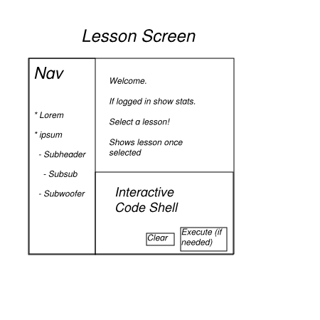
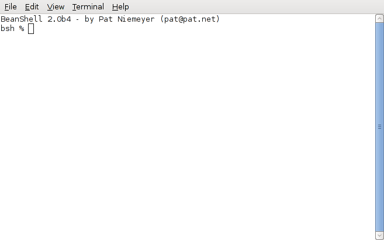
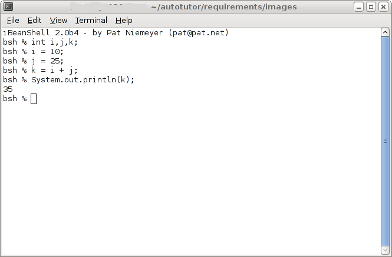

2.2. Using the Student Lesson Screen
This scenario shows a student going through an interactive code lesson.
Interactive coding lessons will be one of the most commonly used aspects
of the CSTutor system.
After logging in or choosing anonymous access, the student will be presented
with the main lesson screen. The student will select a lesson from the
navigation pane. Selecting a lesson will populate the interactive code shell
and the lesson pane and the lesson will begin.

Figure 1: Initial Lesson Screen
The student should now read the text in the lesson pane. Should the lesson call
for it, the student can execute code in the interactive code shell.
Depending on the language used in the shell, the behavior of the shell may vary.

Figure 2: Interactive Code Shell
For a java shell, code is entered one line at a time, and each statement is
executed as it is entered. Students will be able to execute their own
code or copy/modify the code provided by the lesson. The "clear" button will
reset the code shell to a "blank" state. Although not applicable to java, an
"execute" button may appear if the language requires it.

Figure 3: Interactive Code Shell
At any time a student may select a new lesson in the navigation pane and
change lessons.
Prev: ui-overview
| Next: FIXME
| Up: functional
| Top: index